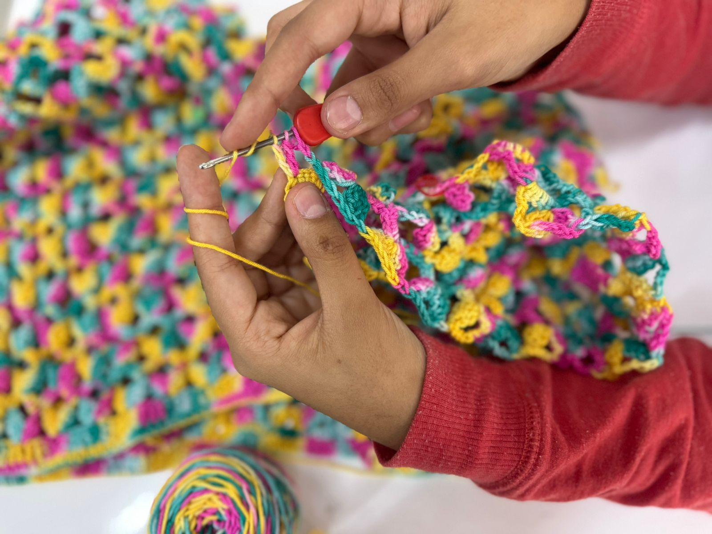
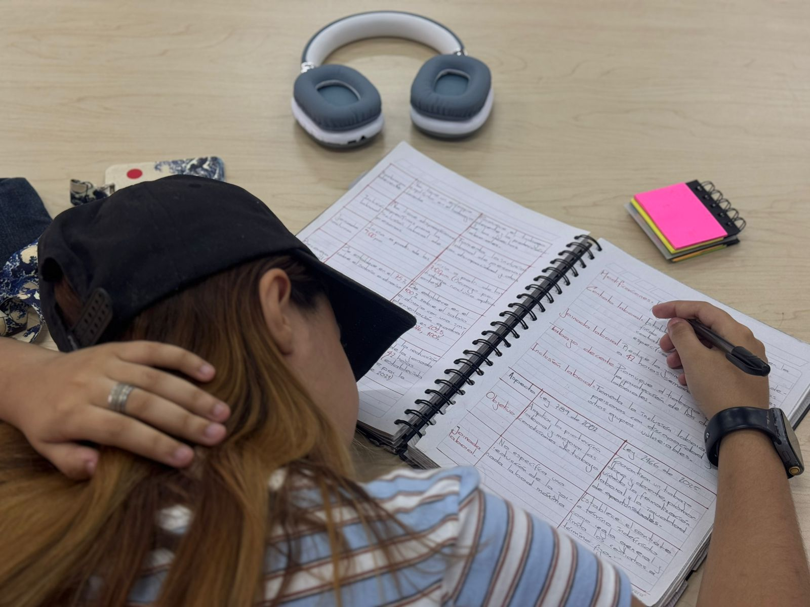
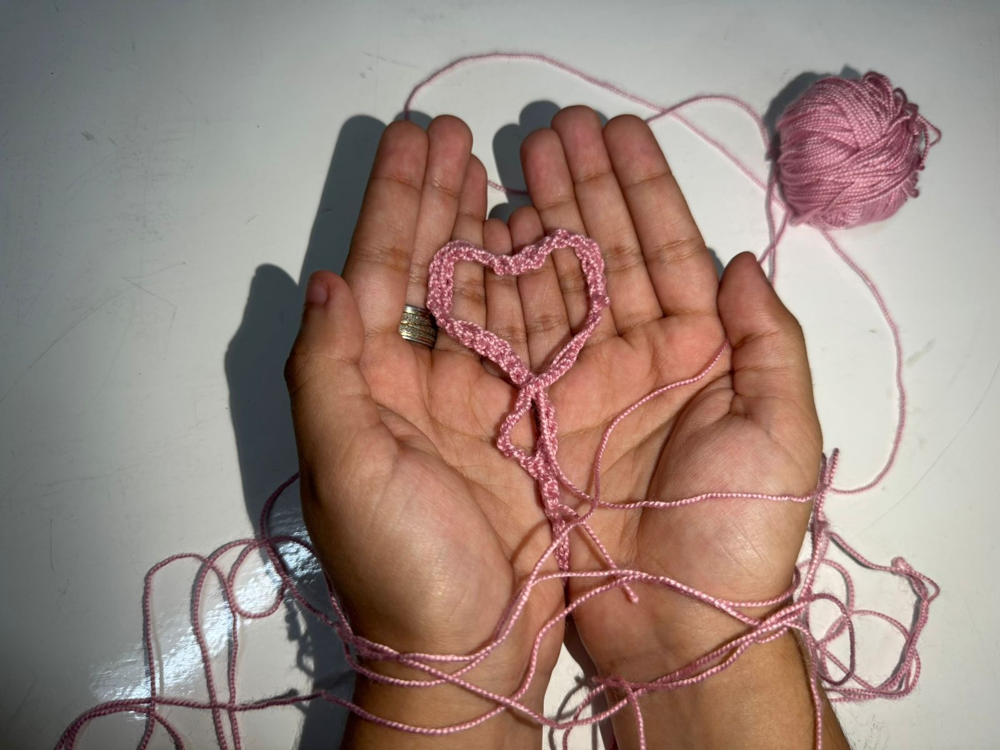
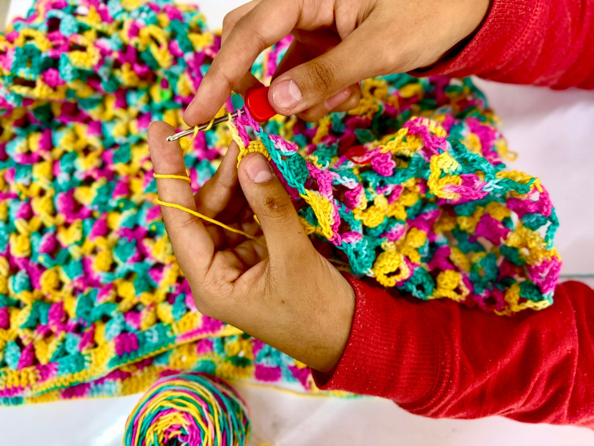

Las manualidades ayudan a disminuir el estrés académico

¿Por qué las manualidades?
Las manualidades ayudarán no solo a potenciar su creatividad, su paciencia, su capacidad de concentración o su psicomotricidad. También regulará los niveles de estrés, reforzará su autoestima, mejorará sus habilidades sociales y de trabajo en equipo. El estrés y la ansiedad son factores recurrentes en los estudiantes, la mayoría de estos sufren algún trastorno, por esto se recomienda hacer manualidades ya que es un mecanismo de afrontamiento subestimado y una actividad para aliviar el estrés.
Varios estudios muestran que las manualidades que las actividades artísticas no solo proporcionan una salida para la autoexpresión, sino que ayuda para conocerte a ti mismo, ver aspectos que ignorabas y cómo manejarlos.
Beneficios que dan las manualidades
1. Mejora tu autoestima
Las manualidades pueden mejorar la autoestima al proporcionar un sentido de logro y orgullo al crear algo con tus propias manos, expresar la creatividad y la individualidad, desarrollar nuevas habilidades y enfocarte en el proceso de creación. Esto puede ayudar a sentirse más seguro y valioso, mejorar la confianza en ti mismo y reducir la presión y el estrés. Algunas manualidades que pueden ser útiles para mejorar la autoestima son la pintura, el dibujo, el collage, la cerámica, la fotografía y la escritura creativa, ya que permiten expresar emociones y sentimientos de manera creativa y capturar momentos y experiencias de manera única.
2. Mejora la agilidad mental

Las manualidades pueden mejorar la agilidad mental al desarrollar habilidades cognitivas como la concentración, la atención y la memoria, estimular la creatividad y la imaginación, y fomentar la planificación y la organización. Actividades como puzzles, dibujo, construcción con bloques o LEGO, juegos de mesa y aprendizaje de nuevos idiomas o habilidades pueden desafiar la mente y mejorar la resolución de problemas, la estrategia y la coordinación. Al mismo tiempo, las manualidades pueden reducir el estrés y la ansiedad, lo que puede ayudar a mejorar la agilidad mental y la capacidad de enfocarse.
3. Ayuda a controlar el estrés

Las manualidades como pintar y tejer pueden mejorar la psicomotricidad al requerir movimientos precisos y controlados, lo que estimula la coordinación mano-ojo y la destreza manual. Estas actividades pueden ayudar a desarrollar la coordinación motora fina y la habilidad para manipular objetos pequeños, lo que puede ser beneficioso para personas de todas las edades, especialmente para aquellos que buscan mejorar su habilidad manual o mantener sus habilidades cognitivas y motoras.
4. Mejora la psicomotricidad

Las manualidades como pintar, tejer y otras actividades similares pueden mejorar la psicomotricidad al requerir movimientos precisos y controlados. Pintar con pinceles o tejer con agujas estimula la coordinación mano-ojo y la destreza manual, lo que puede mejorar la habilidad para realizar tareas que requieren precisión y control. Estas actividades también pueden ayudar a desarrollar la coordinación motora fina y la habilidad para manipular objetos pequeños, lo que puede ser beneficioso para personas de todas las edades.